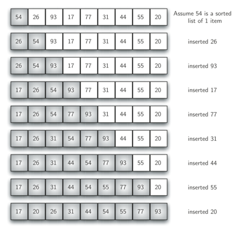
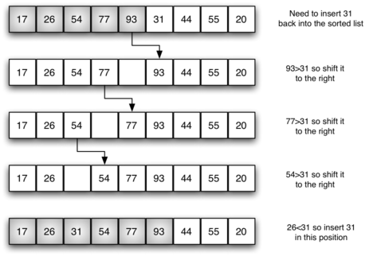

插入排序
学习目标：
记住 插入排序的原理
记住 插入排序的代码实践思路
- 应用 实践思路写出插入排序
插入排序（英语：Insertion Sort）是一种简单直观的排序算法。它的工作原理是通过构建有序序列，对于未排序数据，在已排序序列中从后向前扫描，找到相应位置并插入。插入排序在实现上，在从后向前扫描过程中，需要反复把已排序元素逐步向后挪位，为最新元素提供插入空间。
插入排序分析

def insert_sort(alist):
# 从第二个位置，即下标为1的元素开始向前插入
for i in range(1, len(alist)):
# 从第i个元素开始向前比较，如果小于前一个元素，交换位置
for j in range(i, 0, -1):
if alist[j] < alist[j-1]:
alist[j], alist[j-1] = alist[j-1], alist[j]
alist = [54,26,93,17,77,31,44,55,20]
insert_sort(alist)
print(alist)
时间复杂度
- 最优时间复杂度：O(n)
- 最坏时间复杂度：O(n2)
- 稳定性：稳定